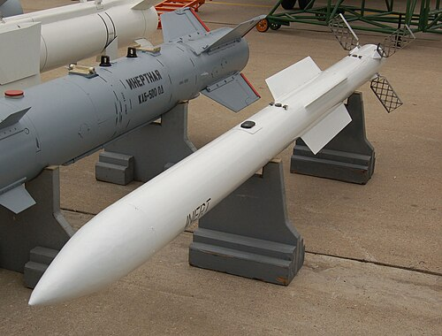
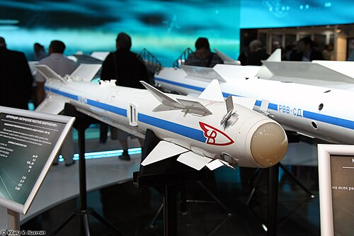

Sukhoi Su-30
he Sukhoi Su-30 (Russian: Сухой Су-30; NATO reporting name: Flanker-C/G/H) is a twin-engine, two-seat supermaneuverable fighter aircraft developed in the Soviet Union in the 1980s by Russia's Sukhoi Aviation Corporation. It is a multirole fighter for all-weather, air-to-air interdiction missions. The Russian Aerospace Forces (VKS) were reported to have 130 Su-30SMs in operation as of 2024.The Su-30 is a multirole fighter. It has a two-seat cockpit with an airbrake behind the canopy. It can serve as an air superiority fighter and as a strike fighter.
Air superiority capabilities
-->R-77

The Vympel NPO R-77 missile (NATO reporting name: AA-12 Adder) is a Russian active radar homing beyond-visual-range air-to-air missile. It is also known by its export designation RVV-AE. It is the Russian counterpart to the American AIM-120 AMRAAM missile.[7] The R-77 was marked by a severely protracted development. Work began in the 1980s, but was not completed before the Soviet Union fell. For many years, only the RVV-AE model was produced for export customers.[8] Production was further disrupted when the Russo-Ukrainian War resulted in a Ukrainian arms embargo against Russia, severing supply chains. The Russian Aerospace Forces finally entered the R-77-1 (AA-12B) into service in 2015.[8][9] It was subsequently deployed by Su-35S fighters in Syria on combat air patrols.[8] The export model of the R-77-1 is called RVV-SD.
-->R-73

The Vympel R-73 (NATO reporting name AA-11 Archer) is a short-range IR-homing air-to-air missile developed by Vympel NPO that entered service in 1984.[7] It was later developed into the more advanced R-74.The R-73 is an infrared homing (heat-seeking) missile with a sensitive, cryogenic cooled seeker with a substantial "off-boresight" capability: the seeker can detect targets up to 40° off the missile's centerline.[8] It can be targeted by a helmet-mounted sight (HMS) allowing pilots to designate targets by looking at them. Minimum engagement range is about 300 meters, with maximum aerodynamic range of nearly 30 km (19 mi) at altitude.